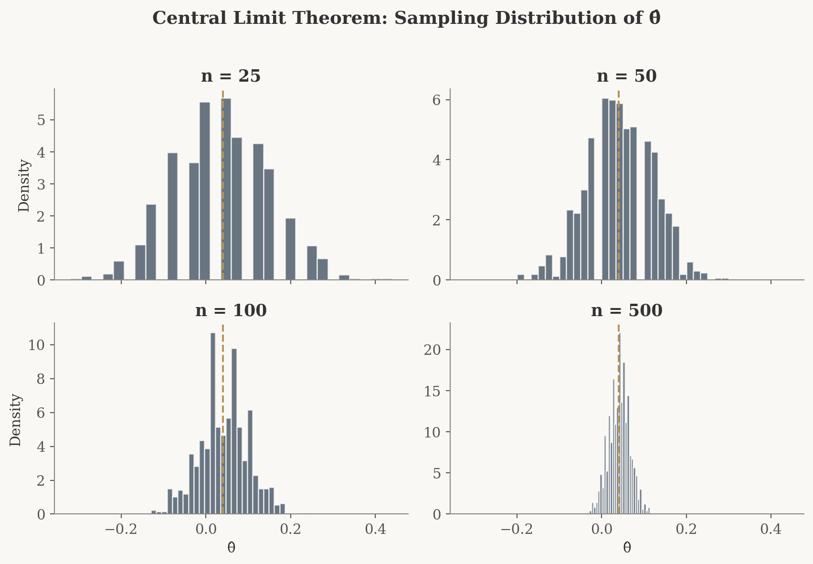

Simulating Key Ideas from Classical Frequentist Statistics
Python
Statistics
A/B Testing
Simulating key ideas from classical frequentist statistics including bootstrap, CLT, hypothesis testing, and the peeking problem.
Author
Merna Saad
Published
April 15, 2026
Introduction
Imagine you run a website with a newsletter sign-up form on the landing page. You’ve been using the call to action (CTA) “Sign up for our newsletter here!” for a while, but a colleague suggests that “Stay up to date by signing up!” might resonate better with visitors. Which version actually drives more sign-ups?
Rather than relying on gut feeling, we can answer this question rigorously with an A/B test. The idea is straightforward: we randomly assign each incoming visitor to see one of the two CTAs (call them CTA A and CTA B) and then compare the sign-up rates between the two groups. Because assignment is random, any systematic difference in outcomes can be attributed to the CTA itself rather than to differences in who happened to see which version.
In this post, we’ll walk through the statistical machinery behind an A/B test step by step. Using simulated data, we’ll explore the Law of Large Numbers, bootstrap resampling, the Central Limit Theorem, hypothesis testing, and the connection between t-tests and linear regression. Along the way, we’ll also see why “peeking” at results before an experiment is complete can lead to trouble.
The A/B Test as a Statistical Problem
Let’s formalize the setup. Each visitor to our site either signs up (which we’ll code as \(1\)) or doesn’t (\(0\)). We can model each visitor’s outcome as a draw from a Bernoulli distribution:
Visitors who see CTA A sign up with probability \(\pi_A\).
Visitors who see CTA B sign up with probability \(\pi_B\).
The quantity we care about is the difference in sign-up rates:
\[
\theta = \pi_A - \pi_B
\]
If \(\theta > 0\), CTA A is better; if \(\theta < 0\), CTA B wins; and if \(\theta = 0\), the two are equivalent.
We can’t observe \(\theta\) directly because we never know the true probabilities. Instead, we estimate it from data. Our estimator is the difference in sample proportions:
\[
\hat\theta = \bar{X}_A - \bar{X}_B
\]
Since each observation is either \(0\) or \(1\), the sample mean of a group is simply the fraction of visitors who signed up. So \(\bar{X}_A = \hat\pi_A\) and \(\bar{X}_B = \hat\pi_B\). The rest of this post is about understanding how well \(\hat\theta\) performs as an estimate of \(\theta\).
Simulating Data
In practice, we wouldn’t know the true values of \(\pi_A\) and \(\pi_B\). That’s the whole point of running the experiment. But simulation gives us a powerful advantage: we can set the truth ourselves and then study whether our statistical tools recover it correctly.
Let’s suppose \(\pi_A = 0.22\) and \(\pi_B = 0.18\), so the true difference is \(\theta = 0.04\) (a 4 percentage point lift for CTA A). We’ll simulate 1,000 visitors per group.
CTA A sign-up rate: 0.216 (true: 0.22)
CTA B sign-up rate: 0.178 (true: 0.18)
Estimated θ̂: 0.038 (true: 0.04000000000000001)
Our point estimate \(\hat\theta\) should be in the neighborhood of the true value, \(0.04\). It won’t be exactly \(0.04\) (that’s sampling variability), but it should be reasonably close. The sections below explore why we can trust this estimator and how to quantify our uncertainty.
The Law of Large Numbers
The Law of Large Numbers (LLN) tells us that as we collect more data, the sample mean converges to the population mean. This is the foundational reason we can trust \(\hat\theta\): with enough visitors in our experiment, the difference in sample proportions will settle down near the true difference \(\theta\).
To see this in action, let’s compute the running average of the element-wise differences between our CTA A and CTA B draws. After just a handful of observations the average bounces around wildly, but as the sample grows it stabilizes near \(0.04\).
The plot tells a clear story. Early on, with only a few dozen observations, the running average swings erratically. Sometimes it’s negative, sometimes it’s well above the truth. But as the sample size climbs into the hundreds and thousands, the estimate locks in near \(0.04\). This is the LLN at work: more data means a more reliable estimate. It’s the reason A/B tests need sufficient sample sizes before we draw conclusions.
Bootstrap Standard Errors
Knowing that \(\hat\theta\) is a good estimator is only half the story. We also need to know how precise it is. Is our estimate of \(0.04\) tightly nailed down, or could the true value plausibly be \(0.10\) or even \(-0.02\)?
The bootstrap is an elegant resampling technique that lets us estimate the variability of a statistic without deriving a formula by hand. The recipe is simple:
Resample (with replacement) from each group, creating a new dataset of the same size.
Compute \(\hat\theta^*\) on the resampled data.
Repeat many times. The standard deviation of all the \(\hat\theta^*\) values is our bootstrap standard error.
# Bootstrapn_boot =1000boot_thetas = np.empty(n_boot)for i inrange(n_boot): boot_a = np.random.choice(cta_a, size=n, replace=True) boot_b = np.random.choice(cta_b, size=n, replace=True) boot_thetas[i] = boot_a.mean() - boot_b.mean()boot_se = boot_thetas.std()# Analytical standard error for comparisonse_analytical = np.sqrt( pi_hat_A * (1- pi_hat_A) / n + pi_hat_B * (1- pi_hat_B) / n)# 95% confidence interval using the bootstrap SEci_lower = theta_hat -1.96* boot_seci_upper = theta_hat +1.96* boot_se
Standard Error Comparison
========================================
Method Standard Error
Bootstrap 0.0177
Analytical (formula) 0.0178
95% Confidence Interval (Bootstrap)
========================================
Metric Value
Point estimate (θ̂) 0.0380
95% CI lower bound 0.0034
95% CI upper bound 0.0726
The bootstrap and analytical standard errors are reassuringly close. They should agree to within a few thousandths, which confirms that the bootstrap is doing its job. The 95% confidence interval gives us a range of plausible values for \(\theta\): if the interval excludes zero, we have evidence that the two CTAs perform differently.
The Central Limit Theorem
The Central Limit Theorem (CLT) is one of the most powerful results in statistics. It tells us that regardless of the shape of the underlying distribution, the sampling distribution of a sample mean (or a difference in sample means) approaches a Normal distribution as the sample size grows.
This matters for our A/B test because it means we can use the Normal distribution to make probability statements about \(\hat\theta\), even though the raw data are binary (0s and 1s), not bell shaped at all.
Let’s see the CLT in action. For each of four sample sizes (\(n = 25, 50, 100, 500\)), we’ll repeat the experiment 1,000 times and plot the distribution of \(\hat\theta\).
sample_sizes = [25, 50, 100, 500]n_sims =1000clt_results = {}for sz in sample_sizes: estimates = np.empty(n_sims)for i inrange(n_sims): a = np.random.binomial(1, pi_A, size=sz) b = np.random.binomial(1, pi_B, size=sz) estimates[i] = a.mean() - b.mean() clt_results[sz] = estimates

At \(n = 25\), the histogram looks jagged and somewhat irregular. The discrete nature of the Bernoulli data is still showing through. By \(n = 50\) and \(n = 100\), the distribution is smoothing out and becoming more symmetric. At \(n = 500\), it’s a convincing bell curve centered near \(\theta = 0.04\). This progression is the Central Limit Theorem doing exactly what it promises: no matter how non-Normal the underlying data, the distribution of the estimator becomes approximately Normal with enough observations.
Notice also that the histograms become narrower as \(n\) increases. This is the variance shrinking with sample size, the same intuition behind the Law of Large Numbers, now visualized as a tighter bell curve.
Hypothesis Testing
Now that we’ve established that \(\hat\theta\) is approximately Normal for large samples, we can perform a formal hypothesis test. The question: is the observed difference in sign-up rates large enough to conclude that CTA A truly outperforms CTA B, or could it just be noise?
We set up our hypotheses as:
\(H_0: \theta = 0\) (the two CTAs produce the same sign-up rate, our null hypothesis)
\(H_1: \theta \neq 0\) (the CTAs differ, our alternative hypothesis)
To test \(H_0\), we standardize our estimate to form a test statistic:
\[
z = \frac{\hat\theta - 0}{SE(\hat\theta)}
\]
Why standardize? Here’s the logic, step by step:
The CLT tells us \(\hat\theta\) is approximately Normal for large samples. Under \(H_0\), its mean is \(0\).
Dividing a Normal random variable by its standard deviation yields a standard Normal, \(N(0,1)\).
So under \(H_0\), \(z \;\dot\sim\; N(0,1)\). We now know the entire distribution of our test statistic under the null, which is exactly what we need to compute a p-value: the probability of seeing a result at least as extreme as ours if \(H_0\) were true.
A brief note on terminology: you’ll often see this called a “t-test.” Strictly speaking, the t-distribution arises when data are drawn from a Normal distribution and the variance must be estimated. Our data are Bernoulli (not Normal), so the CLT gives us approximate Normality and we’re really performing something closer to a z-test. For large samples the t-distribution and the standard Normal are nearly identical, so the distinction rarely matters in practice. Still, it’s important to understand the reasoning behind it.
The classical t-test applies when the data come from a Normal distribution and the variance is unknown. In that setting, the ratio of the estimate to its estimated standard error follows an exact t-distribution. In our case, the data are Bernoulli, not Normal. The CLT gives us approximate Normality, and since we estimate the SE from the data, what we are really doing is closer to a z-test. For large samples, the t-distribution and the standard Normal are nearly identical, so the distinction has little practical consequence.
# Compute the z-statistic and p-valuez_stat = theta_hat / se_analyticalp_value =2* (1- stats.norm.cdf(abs(z_stat))) # two-sided test
Hypothesis Test Results
========================================
θ̂ = 0.0380
SE(θ̂) = 0.0178
z-statistic = 2.1388
p-value = 0.0325
→ At α = 0.05, we reject H₀.
There is statistically significant evidence that
the two CTAs produce different sign-up rates.
The p-value tells us how likely we’d be to observe a difference as large as \(\hat\theta\) (or larger) if the two CTAs were truly identical. A small p-value (below our threshold of \(0.05\)) means the data are hard to reconcile with the null hypothesis, and we reject \(H_0\) in favor of the conclusion that the CTAs differ. A larger p-value means the difference we observed could plausibly have arisen by chance alone.
The T-Test as a Regression
Here’s an insight that is both elegant and practically useful: the two-sample test we just ran is mathematically equivalent to a simple linear regression. This connection matters because regression generalizes effortlessly. You can add control variables, interaction terms, or additional treatment arms using the same framework.
To see this, we stack all 2,000 observations into a single dataset with two columns:
\(Y_i\): the outcome (\(1\) if sign-up, \(0\) if not)
\(D_i\): the treatment indicator (\(1\) if the visitor saw CTA A, \(0\) if CTA B)
Then we fit the regression \(Y_i = \beta_0 + \beta_1 D_i + \varepsilon_i\). The coefficients have a clean interpretation:
\(\beta_0\) is the expected sign-up rate when \(D_i = 0\), which is the mean of the B group, estimating \(\pi_B\).
\(\beta_0 + \beta_1\) is the expected sign-up rate when \(D_i = 1\), which is the mean of the A group, estimating \(\pi_A\).
Therefore \(\beta_1 = \pi_A - \pi_B = \theta\), and the OLS estimate \(\hat\beta_1\) is numerically identical to \(\hat\theta = \bar{X}_A - \bar{X}_B\).
# Stack data into a regression-friendly formatY = np.concatenate([cta_a, cta_b])D = np.concatenate([np.ones(n), np.zeros(n)])# Fit OLS regressionX_reg = sm.add_constant(D)model = sm.OLS(Y, X_reg).fit()
The point estimate \(\hat\beta_1\) matches \(\hat\theta\) exactly, as expected. The standard errors and test statistics may differ very slightly because OLS uses a single pooled variance estimate while the two-sample formula allows separate variances for each group. For our sample size, the difference is negligible.
The takeaway: regression and the two-sample test are two views of the same coin. When you need something more than a simple A/B comparison (say you want to control for visitor demographics or test three CTAs at once), the regression framework extends naturally, while the two-sample formula does not.
The Problem with Peeking
Your boss is impatient. Instead of waiting for the full 1,000 visitors per group, she wants to check the results after every 100 visitors, peeking at the data 10 times over the course of the experiment. If any peek shows a significant result at \(\alpha = 0.05\), she wants to declare a winner immediately.
This sounds reasonable on the surface. But it’s a trap.
A single hypothesis test at the \(\alpha = 0.05\) level has a 5% chance of a false positive, meaning we reject \(H_0\) when there’s actually no difference. But each additional peek is another roll of the dice. With 10 peeks, the probability that at least one of them triggers a false alarm is much higher than 5%.
Let’s demonstrate this with a simulation. We’ll set up a world where the null is true (\(\pi_A = \pi_B = 0.20\), no difference) and simulate 10,000 experiments, each with 10 peeks.
# Peeking simulation: both groups have the SAME conversion ratepi_null =0.20n_experiments =10_000peek_points = np.arange(100, 1001, 100) # peek at 100, 200, ..., 1000false_positive_count =0for _ inrange(n_experiments):# Simulate full experiment (1000 per group) a_full = np.random.binomial(1, pi_null, size=1000) b_full = np.random.binomial(1, pi_null, size=1000) any_significant =Falsefor peek_n in peek_points: a_peek = a_full[:peek_n] b_peek = b_full[:peek_n] p_a = a_peek.mean() p_b = b_peek.mean() diff = p_a - p_b se = np.sqrt(p_a * (1- p_a) / peek_n + p_b * (1- p_b) / peek_n)if se >0: z = diff / se p_val =2* (1- stats.norm.cdf(abs(z)))if p_val <0.05: any_significant =Truebreakif any_significant: false_positive_count +=1empirical_fpr = false_positive_count / n_experiments
Peeking Simulation Results
==================================================
True state of the world: θ = 0 (no difference)
Number of experiments: 10,000
Peeks per experiment: 10
Nominal false positive rate (single test): 5.0%
Empirical false positive rate (with peeking): 19.9%
→ Peeking inflated the false positive rate by roughly
4.0x compared to a single test.
The result is striking. Instead of the expected 5% false positive rate, peeking pushes it up substantially, often to around 15 to 20% or higher. That means roughly 1 in 5 experiments would lead your boss to declare a “winner” even when neither CTA is actually better.
This is known as the multiple comparisons problem. Each peek is an independent opportunity for random noise to cross the significance threshold. The more you look, the more likely you are to find something that isn’t there. In practice, this is why A/B testing platforms use methods like sequential testing or alpha spending functions that adjust for repeated looks at the data, keeping the overall false positive rate under control.
The lesson is simple: decide your sample size in advance and don’t peek. Or, if you must monitor results during an experiment, use a statistical framework designed for sequential analysis.